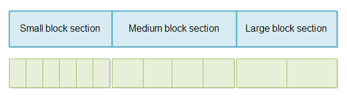

Java Resizable Array
Jakob Jenkov |
Sometimes you want to keep data in a single, consecutive array for fast and easy access, but need the array to be resizable, or at least expandable. Java arrays are not resizable. To get a resizable array you need to implement it yourself. In this tutorial I will show you how to implement a resizable array in Java.
Java Resizable Array - GitHub Repository
The code for the Java resizable array implemented in this tutorial can be found on GitHub (for easy access):
https://github.com/jjenkov/java-resizable-array
The code consist of 3 Java classes and 2 unit tests.
Resizable Array Use Case
Imagine you have a server receiving messages of varying sizes. Some messages are very small (e.g. less than 4KB), others as large as 1MB or even larger.
If the server is receiving messages from many (100K +) connections at the same time, we need to limit how much memory we pre-allocate for each message. We cannot just allocate the maximal message size (e.g. 1MB or 16MB etc.) for each buffer. That would deplete the server memory fast when the number of connections and messages go up! 100.000 x 1MB = 100GB (approximately - not precisely - but you get the picture).
Instead we want to assume that most messages are small, so we start with a small buffer. If a message grows beyond the small buffer size, we allocate a new, larger array and copy the data to the new, larger array. If the message outgrows the larger array, an even larger array is allocated, and the message is copied to that.
Using this strategy, most messages will only ever use a small buffer. This means that the server memory is used more efficiently. 100.000 x 4KB (small buffer size) is only 400MB. Most servers should be able to handle that. Even at 4GB (1.000.000 x 4KB) modern servers should be able to handle it.
Resizable Array Design
The resizable array is designed to consist of two components:
- ResizableArray
- ResizableArrayBuffer
The ResizableArrayBuffer contains a single, large array. This array is divided into three sections.
One section for small arrays, one for medium size arrays and one for large arrays.
The ResizableArray represents a single, resizable array, with its data stored in the array in
the ResizableArrayBuffer.
Here is a diagram illustrating the large array divided into sections, and each section divided into blocks.

By reserving an area of the large array in the ResizableArrayBuffer for each message size interval
(small, medium, large), we make sure that the array cannot be fully filled with either size messages. For instance,
receiving a lot of small messages cannot take all the memory and thus block for medium and large messages. Similarly,
receiving a lot of large messages cannot take up all memory and block for medium and small messages.
Since all messages start as small messages, if the amount of small arrays is depleted, no new arrays can be allocated, regardless of whether or not there is space in the medium and large array sections. However, it is possible to make the small array section large enough that the probability of this happening is very low.
It is still possible to grow small messages into medium and large messages, even if the small message section is fully used.
Keeping Track of Free Blocks
The large array inside the ResizableArrayBuffer is split up into three sections. Each section is split
up into smaller blocks. Each block in each section has the same size. Blocks in the small message section has the
same small block size. Blocks in the medium message section has the same medium block size. And blocks in the
large message section has the same large block size.
When all blocks within a section has the same size, it is easier to keep track of used and unused blocks. You can simply use a queue containing the start indexes of each block. One queue is needed for each section of the shared array. Thus, one queue is needed to keep track of free small blocks, one queue for free medium blocks and one queue for free large blocks.
Allocating a block from any of the sections can be accomplished simply by taking the next free block start index from the queue associated with the desired section. Freeing a block is done by putting the start index back into the corresponding queue.
As a queue I have used a simple Ring Buffer implementation. The implementation
used in the GitHubRepository is called QueueIntFlip.
Expand on Write
The Resizable array will expand itself when you write data to it. If you attempt to write more data to it than it has space for in its currently allocated block, it will allocate a new, larger block and copy all its data to that new block. The previous smaller block is then freed.
Freeing Arrays
Once you are done with a resizable array you should free it again, so that it can be used for other messages.
Using the ResizableArrayBuffer
I want to show you how to use the ResizableArrayBuffer (from the GitHub repository).
Creating a ResizableArrayBuffer
First you must create a ResizableArrayBuffer. You do so like this:
int smallBlockSize = 4 * 1024;
int mediumBlockSize = 128 * 1024;
int largeBlockSize = 1024 * 1024;
int smallBlockCount = 1024;
int mediumBlockCount = 32;
int largeBlockCount = 4;
ResizableArrayBuffer arrayBuffer =
new ResizableArrayBuffer(
smallBlockSize , smallBlockCount,
mediumBlockSize, mediumBlockCount,
largeBlockSize, largeBlockCount);
This example creates a ResizableArrayBuffer with a small array size of 4KB, medium array size of
128KB and a larger array size of 1MB. The ResizableArrayBuffer contains space for 1024 small arrays (4MB in total),
32 medium arrays (4MB in total) and 4 large arrays (4MB in total) - for a full shared array size of 12MB.
Obtaining a ResizableArray Instance
To obtain a ResizableArray instance, call the ResizableArrayBuffer's getArray()
method, like this:
ResizableArray resizableArray = arrayBuffer.getArray();
This example obtains a ResizableArray of the smallest size (4KB the small size was set to earlier).
Writing to a ResizableArray
You write to a ResizableArray by calling its write() method. The ResizableArray
class in the GitHub repository only contains a single write() method which takes a ByteBuffer
as parameter. It should be pretty easy to add more write() methods yourself, though.
Here is a write example:
ByteBuffer byteBuffer = ByteBuffer.allocate(1024);
for(int i=0; i < 1024; i++){
byteBuffer.put((byte) i);
}
byteBuffer.flip():
int bytesCopied = resizableArray.write(byteBuffer);
This example copies the contents of the ByteBuffer into the array (block) of the ResizableArray.
The value returned by write() is the number of bytes copied from the ByteBuffer.
In case the ByteBuffer had contained more data than the ResizableArray, the
ResizableArray will attempt to expand itself to make space for the data in the ByteBuffer.
If the ResizableArray cannot contain all the data in the ByteBuffer after expanding
itself to the max size, the write() method will return -1 and no data will have been
copied at all!
Reading From a ResizableArray
When you read from a ResizableArray you do so directly in the shared array which all
ResizableArray instances share. The ResizableArray contains the following
public field:
public byte[] sharedArray = null; public int offset = 0; public int capacity = 0; public int length = 0;
The sharedArray field references the shared array which all ResizableArray instances
keep their data in. That is the array kept internally in the ResizableArrayBuffer too.
The offset field contains the start index in the shared array where this ResizableArray
keeps its data (the block assigned to it).
The capacity field contains the size of the block in the shared array assigned to this
ResizableArray instance.
The length field contains how much of the assigned block the ResizableArray is actually
using.
To read the data written to a ResizableArray simply read the bytes from sharedArray[offset]
to sharedArray[offset + length -1].
Freeing a ResizableArray
Once you are done using a ResizableArray instance you should free it. You do so simply by calling
the free() method on the ResizableArray, like this:
resizableArray.free();
Calling free() takes care of returning the used block to the correct block queue, regardless of
the size of the block allocated to the ResizableArray.
Variations on the Design
You can change the design of my ResizableArrayBuffer to meet your needs. For instance, you can
create more than 3 sections inside it. It should be fairly easy to do. Just look at the code in the GitHub
repository and modify it.
| Tweet | |
Jakob Jenkov | |